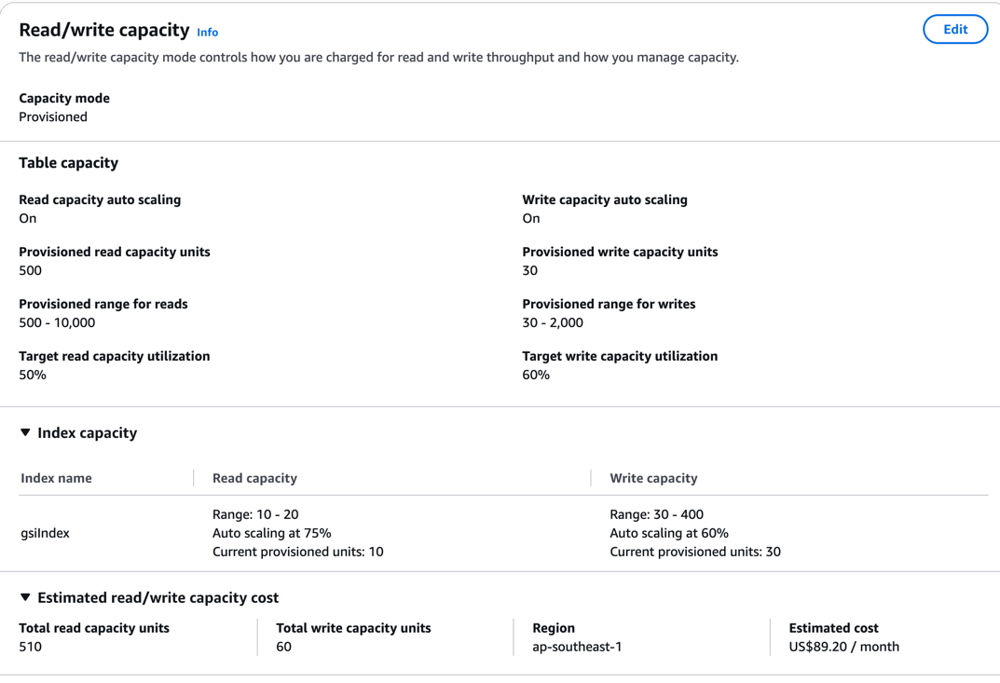
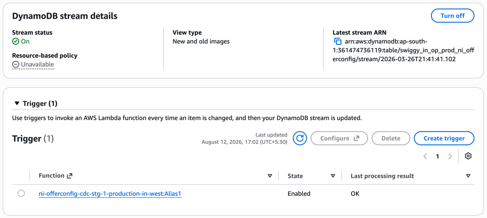
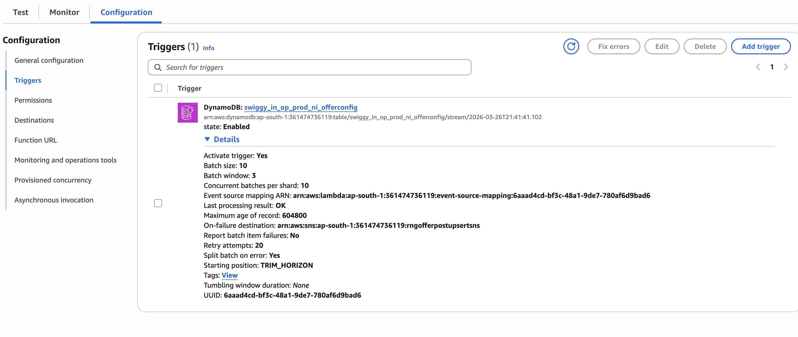

Think of RCU/WCU as a speed limit dial, not a bucket of requests. You pay for how fast you can read/write per second — not how much data you store.
Size of the actual item (row) — sum of all attributes (partition key, sort key, every column) — in bytes as stored, not as it looks in JSON.
RCU needed = ceil(item_size_in_KB / 4) [strongly consistent read] WCU needed = ceil(item_size_in_KB / 1)
| Item size | Read (strong) | Read (eventual) | Write |
|---|---|---|---|
| 2 KB | 1 RCU | 1 RCU (2KB fits in 4KB → still 1) | 2 WCU |
| 4 KB | 1 RCU | 1 RCU | 4 WCU |
| 4.1 KB | 2 RCU (rounds up) | 1 RCU | 5 WCU |
| 10 KB | 3 RCU | 2 RCU | 10 WCU |
Bigger item → more units needed. It always rounds up to the next whole unit.
Provisioned capacity is not a daily quota. It's a ceiling checked fresh every single second.
ProvisionedThroughputExceededException, client must retry.| Read type | Cost per 4KB chunk |
|---|---|
| Strongly consistent | 1 RCU |
| Eventually consistent | 0.5 RCU (2 reads for 1 RCU) |
Set per request via ConsistentRead: true/false in the API call — not a table setting. Default is false (eventual).
GSI reads are always eventually consistent — ConsistentRead: true is not allowed on a GSI.
DynamoDB keeps each item copied across multiple replicas (different AZs). A write lands on a majority first, then syncs to the rest — that sync isn't instant.
T=0ms Write: user.status = "active" T=5ms Strong read → "active" ✅ always correct T=5ms Eventual read → could be old value ⚠️ replica may not have synced yet T=50ms Eventual read → "active" ✅ caught up by now
Rule of thumb: use strong for write-then-read-your-own-write flows (e.g. user updates profile, reloads immediately). Use eventual for dashboards/analytics/background jobs — cheaper, faster, staleness doesn't matter.
Setup: Provisioned RCU = 30. You send 50 strongly consistent reads (1 RCU each, ≤4KB items) in the same second.
ProvisionedThroughputExceededException. ❌Provisioned capacity is a hard per-second ceiling. Exceeding it either eats banked burst capacity or throttles the excess — auto scaling helps with sustained load, not instant spikes.
Identical mechanics as reads — just no strong/eventual split (writes are always full price, no "eventual write").
Setup: Provisioned WCU = 30. You send 50 writes (1 WCU each, ≤1KB items) in the same second.
ProvisionedThroughputExceededException. ❌UnprocessedItems for retry — the whole batch doesn't fail.Refers to the screenshot's "Provisioned range for reads: 500 – 10,000" and "Provisioned range for writes: 30 – 2,000".
These are the min/max boundaries for auto-scaling — the floor and ceiling within which DynamoDB is allowed to move provisioned RCU/WCU automatically.
Current provisioned: 500 RCU (min) Traffic spikes → consumed RCU regularly ~350 (70% of 500, above 50% target) Auto-scaling raises provisioned RCU → say to 700 Traffic keeps growing → keeps raising... but stops hard at 10,000 (max)
If real traffic needs more than the max, it gets throttled like any other capacity-exceeded case — the range doesn't auto-expand, the max must be raised manually.
Target tracking auto-scaling protects against sustained load growth, not instant spikes.
The 50% (reads) / 60% (writes) value from the screenshot — the trigger threshold auto-scaling uses to decide when to scale up or down.
Utilization % = (consumed RCU / provisioned RCU) × 100
With provisioned = 500 and target = 50%:
Target % is a cost vs safety-margin dial. Low target = expensive but spike-safe. High target = cheap but riskier. AWS's suggested default is 70%; this table uses 50% (reads, conservative) and 60% (writes).
Scan (slow, reads every item). A GSI fixes that.Example: table Orders, PK = orderId.
userId. Then it's fast too.userId-index, gsiIndex) — your choice.userId), optionally a sort key too (e.g. createdAt).TableName + IndexName.ALL, KEYS_ONLY, or a subset) — saves storage if you don't need every column there.RCU │ 50├─── Provisioned (flat line — your ceiling) │ ╭╮ ╭─╮ 30├─── ╱ ╲ ╱╲ ╱ ╲ ← Consumed (jagged — actual usage) │ ╱ ╲╱ ╲╱ 0└──────────────────────────→ time
ThrottledRequests spike exactly there).Consumed ≤ 250 → Provisioned line stays flat at 500
Consumed > 250 (sustained ~1-2 min) → Provisioned steps up (e.g. 500 → 700)
→ new trigger becomes 50% of 700 = 350
Consumed drops → scales back down, never below min
RCU
700├────────────────────╭────── ← Provisioned steps up
│ │
500├───────╮ ╭╮ │
│ ╲╱ ╲ ╭───╯
250│ - - - - - - -╲-╱- - - - - ← trigger line (50% of current provisioned)
│ consumed
0└──────────────────────────→ time
Trigger point isn't fixed — it's always "target % of current Provisioned," so it moves up each time Provisioned steps up.
| Topic | Why it matters in interviews |
|---|---|
| Partition key design & hot partitions | THE most-asked DDB interview topic. How partitioning works internally, why bad key choice kills throughput even with high provisioned capacity. |
| On-Demand vs Provisioned | Trade-offs, when to pick which. |
| Single-table design | Signature DynamoDB interview topic — modeling multiple entity types in one table, adjacency list pattern, overloaded GSIs. |
| LSI vs GSI | Deeper comparison — creation-time-only, shared capacity, strong consistency support. |
| DynamoDB Streams | Change data capture, used with Lambda for event-driven architectures. |
| Transactions | ACID across items, 2x cost, when to use vs conditional writes. |
| Conditional writes / optimistic locking | Handling concurrent updates without transactions. |
| Global Tables | Multi-region replication — multi-region design questions. |
| TTL, backups (PITR), DAX | Common follow-up/curveball topics. |
| Query vs Scan, pagination, filter expressions | Efficient access pattern fundamentals. |
| Partition limits — 3000 RCU / 1000 WCU / 10GB per partition | Ties back to hot partitions — the "aha" depth interviewers look for. |
When throttling happens: whenever requests in a given second exceed available capacity (provisioned ceiling + any banked burst) — can happen even if the table-level average looks fine, because DynamoDB enforces limits per partition, not just per table.
Impact: throttled requests fail immediately with ProvisionedThroughputExceededException — no data read/written for that request. Unhandled, this shows up as increased latency (SDK retries/backoff), degraded UX, or outright errors once retries exhaust. Often the root cause of "mysterious" perf issues — table looks fine in aggregate, but one hot key is getting hammered.
| API type | On throttle |
|---|---|
| Single-item (GetItem, PutItem, Query, UpdateItem, DeleteItem) | Exception thrown (ProvisionedThroughputExceededException) → SDK auto-retries with exponential backoff by default |
| Batch (BatchGetItem, BatchWriteItem) | No exception for the whole batch — throttled items returned as UnprocessedItems (write) / UnprocessedKeys (read) → caller must resubmit them |
Blindly assuming a BatchWriteItem/BatchGetItem call fully succeeded is a common bug — always check UnprocessedItems/UnprocessedKeys isn't empty and retry-loop it.
ProvisionedThroughputExceededException directly.UnprocessedItems/UnprocessedKeys is non-empty.WriteThrottleEvents/ReadThrottleEvents, useful for system-wide monitoring, not per-request code.Track each write: success or throttled, in a sliding window (e.g. last 5 sec / last 100 requests) throttle_rate = throttled_count / total_count throttle_rate rising → slow down (consumer pulls slower from queue) throttle_rate == 0 → speed back up gradually (AIMD)
Simple version: the signal is whatever DDB tells you failed — exception (single-item), unprocessed list (batch), or CloudWatch metric (system-wide). Feed whichever one you have into a rolling throttle-rate counter, and use that number to speed up or slow down.
| Second | Writes sent | Succeeded (cap 30) | Throttled | throttle_rate this sec |
|---|---|---|---|---|
| 1 | 25 | 25 | 0 | 0/25 = 0% |
| 2 | 35 | 30 | 5 | 5/35 = 14% |
| 3 | 40 | 30 | 10 | 10/40 = 25% |
Sliding window (last 3 sec) = 25+35+40 = 100 sent, 0+5+10 = 15 throttled throttle_rate = 15 / 100 = 15% → rising → BACK OFF
Backpressure reacts: consumer cuts send rate (e.g. 40/sec → 20/sec, below the 30 WCU cap so queue drains safely).
| Second | Writes sent | Succeeded | Throttled | throttle_rate this sec |
|---|---|---|---|---|
| 4 | 20 | 20 | 0 | 0% |
| 5 | 20 | 20 | 0 | 0% |
New window (sec 3-5) = 40+20+20 = 80 sent, 10+0+0 = 10 throttled throttle_rate = 10/80 = 12.5% → still positive but falling → hold or ease up slightly
Once throttle_rate hits 0% for a couple consecutive windows → AIMD ramps send rate back up gradually (e.g. 20 → 25 → 30/sec), watching throttle_rate again at each step. If it spikes again → cut hard (e.g. back to 15/sec) and repeat.
That's the whole loop: measure → compute rate → back off if rising, creep up if zero → repeat.
Rate limiting = static cap set upfront (known capacity). Backpressure = dynamic adjustment based on real-time signal (changing conditions). Use both: rate limiter as the floor, backpressure as the live correction on top.
Same two flow-control solutions as writes, plus one read-specific lever:
ReadThrottleEvents), dynamically slow down consumer, ramp back up when clear (AIMD).Rate limiting + backpressure = universal safety net for any throttling, read or write. Eventual consistency is a read-only extra lever — it reduces cost per request, not just the send rate.
DynamoDB doesn't store your table as one giant blob. Internally, it's split into multiple physical storage partitions — each a self-contained chunk of SSD storage with its own fixed throughput ceiling. Many small independent shards behind the scenes, stitched together to look like one table.
Every partition key value gets run through an internal hash function. The hash output determines exactly which physical partition that item lands on.
PutItem(orderId = "ORD123")
↓
hash("ORD123") → some hash value
↓
hash value maps to Partition #7 (deterministic, always same partition for same key)
Items with the same partition key always land on the same physical partition (required — Query needs them co-located). Items with different keys spread across different partitions, ideally evenly, if the hash distributes well.
| Limit | Value |
|---|---|
| Max throughput per partition | 3000 RCU and/or 1000 WCU |
| Max storage per partition | 10 GB |
Table-level provisioned capacity (say, 10,000 RCU) is not one shared pool — DynamoDB divides it across all partitions. A single partition can never exceed 3000 RCU / 1000 WCU, no matter how much you've provisioned at the table level.
One partition receiving disproportionately more traffic than others, because too many requests hash to the same partition key (or a small handful of keys).
| Bad pattern | Why it creates a hot partition |
|---|---|
Low cardinality key — e.g. status as PK | Only 2-3 hash values → all traffic funnels into 2-3 partitions. |
Time-based key — e.g. date as PK | Everyone writing "today's" data hits the SAME partition all day. |
Celebrity/whale problem — e.g. userId as PK, one user gets 1000x traffic | That one partition gets slammed while millions of others idle. |
| Sequential/incrementing keys — e.g. auto-increment order IDs | New writes always land on the "latest" partition range — moving hot spot. |
Table-level dashboard can look totally healthy while one partition throttles constantly:
Table-level view (looks fine): Reality (per-partition):
Provisioned: 40,000 RCU Partition 1: 3000/3000 RCU ← THROTTLING
Consumed: 3,000 RCU (7.5%) Partition 2: 5/3000 RCU (idle)
Partition 3: 3/3000 RCU (idle)
Raising table-level provisioned capacity does NOT fix this — a hot partition is still capped at 3000 RCU regardless of table total. Result: throttling, retries, cascading latency, degraded UX for a slice of traffic while dashboards suggest plenty of headroom.
Priority order — good key design first, salting is last resort:
A good key needs: high cardinality + uniform traffic + matches the access pattern. Deciding PK vs SK:
userId, tenantId#userId).Example — Orders table:
PK = userId SK = orderId
─────────────────────────────────
userId=U1 orderId=O1 {amount: 200, date: ...}
userId=U1 orderId=O2 {amount: 450, date: ...}
userId=U2 orderId=O3 {amount: 100, date: ...}
userId as PK → high cardinality (millions of users), spreads writes/reads across partitions.orderId as SK → lets you fetch "all orders for U1" as one fast Query (range within the U1 partition), while each order stays uniquely identifiable.Interview soundbite: "DynamoDB divides table-level provisioned capacity across physical partitions, each hard-capped at 3000 RCU / 1000 WCU / 10GB. A poorly chosen partition key funnels disproportionate traffic into one partition, throttling even when the table's aggregate utilization looks low. In production, the real fix is good key design (high cardinality PK, SK for range queries) plus a cache with single-flight in front of hot reads — salting is a last resort for extreme write-hot keys that can't be cached away."
Key design is fine here (e.g. userId has high cardinality) — the issue is real-world traffic skewed toward ONE value. Different fix for reads vs writes:
| Side | Problem | Fix |
|---|---|---|
| Read (everyone reading the same hot item) | Stampede of identical reads | Cache + single-flight — only 1 request hits DDB, rest wait/share the result |
| Write (everyone writing distinct events, e.g. likes) | Flood of unique writes, can't be coalesced | Buffer + batch write — aggregate events in memory/queue (e.g. Kinesis/SQS) for ~1 sec, flush ONE combined update instead of writing every event |
Single-flight (read): 1M identical reads → 1 DDB read, rest share result
Buffer+batch (write): 1M distinct likes → aggregate for 1 sec → 1 DDB write ("+50,000")
Single-flight coalesces duplicate requests (reads). It can't help writes because each write is unique data — that needs aggregation instead.
What is CDC: Change Data Capture — every insert/update/delete on the table automatically gets recorded as an ordered event, like a change log (similar to a DB's WAL/binlog). We use it to react to data changes async (e.g. sync a lookup table) without the app manually publishing events.
Shard = one ordered lane. Table Orders, PK=userId, 5 writes: U1 create → U2 create → U1 update → U3 create → U1 delete.
Shard A (U1, U3): [INSERT U1] → [MODIFY U1] → [INSERT U3] → [REMOVE U1] ← order preserved Shard B (U2): [INSERT U2]
Same key → always same shard → order guaranteed. Different keys → may land in different shards → no order guarantee between them (but can run in parallel). You never manage this — DDB handles shard routing automatically.
{eventName: INSERT/MODIFY/REMOVE, keys, newImage}.| Type | What you get |
|---|---|
KEYS_ONLY | Just the key attributes |
NEW_IMAGE | Item after the change |
OLD_IMAGE | Item before the change |
NEW_AND_OLD_IMAGES | Both — needed to diff what changed |
Batch fails → retry same batch → still failing → shard STUCK ↓ New changes for that shard's keys pile up unprocessed ↓ CloudWatch "IteratorAge" metric grows — your lag indicatorMitigate with
bisectBatchOnFunctionError, an on-failure DLQ destination, and idempotent consumer logic (retries can redeliver the same record).
Check in this order — cheapest/most upstream first:
IteratorAge (CloudWatch) — tells you whether the problem is upstream (steps 1-3, nothing flowing at all) or downstream (ESM fine, but Lambda stuck/erroring on a batch — check Lambda logs/errors next).The glue/connector AWS creates between your Lambda and the stream — it's what polls the shards and invokes Lambda. Without it, Lambda has no idea the stream exists.
DynamoDB Stream ←——— ESM ———→ Lambda function (the data) (the wiring) (your code)
Enabled/Disabled) and settings (batch size, retry config, DLQ, bisectBatchOnFunctionError).Disabled — manually, or auto-disabled by AWS after repeated failures — meaning Lambda's code is fine but nothing is even calling it.1. DynamoDB → table → Exports and streams tab

StreamViewType is set.2. Lambda → function → Configuration → Triggers

bisectBatchOnFunctionError is on — a bad record won't block the whole batch forever."DynamoDB Streams + Lambda is a pull-based, auto-scaling consumer, not a push model — a write burst doesn't overwhelm Lambda by flooding it; the ESM scales concurrency per shard (and via Parallelization Factor, even within a shard) to keep pace. The only real limit is Lambda's account concurrency ceiling — if hit, processing just lags temporarily (visible as rising IteratorAge) and catches up once the burst passes, with no data loss as long as it's within the retention window."
Item: {productId: "P1", stock: 10}
Client A reads stock=10 (wants to sell 2 → set stock=8)
Client B reads stock=10 (wants to sell 3 → set stock=7)
A writes: stock=8
B writes: stock=7 ← overwrites A's update, A's sale is silently lost!
Correct answer should've been 10-2-3=5, got 7 instead.
DynamoDB has no locking (no SELECT FOR UPDATE) — "read → compute → write" isn't atomic by default, so concurrent writers can clobber each other.
Every write API (PutItem/UpdateItem/DeleteItem) supports ConditionExpression: "only perform this write IF this is true — else fail." Checked and written in one atomic server-side call, no race window.
UpdateItem(key=P1, update="SET stock = stock - 2", condition="stock >= 2")
Fails with ConditionalCheckFailedException if condition doesn't hold — nothing is written.
Add a version field. Every write checks version hasn't changed, and bumps it.
A: UpdateItem SET stock=8,version=4 WHERE version=3 ✅ (DB still had version 3) B: UpdateItem SET stock=7,version=4 WHERE version=3 ❌ FAILS (DB is now version 4) B re-reads (stock=8,version=4), retries: SET stock=5,version=5 WHERE version=4 ✅ correct!
"Optimistic" = no lock held upfront — assume conflicts are rare, detect + retry only when they happen.
Never do a separate check-then-write — that reintroduces the race. Instead, attach the expected version as the ConditionExpression on the SAME write call:
loop (up to N retries):
item = GetItem(id) // read current state
newStock = item.stock - qty
try:
UpdateItem(
update = "SET stock=:s, version=:v",
condition = "version=:expected",
values = { s: newStock, v: item.version+1, expected: item.version }
)
return SUCCESS
catch ConditionalCheckFailedException:
continue // someone else updated it — re-read and retry
DynamoDB checks the version AND writes in one atomic request — either both happen or neither does. Your app's only job is to catch the failure and retry the loop.
LSI = Local Secondary Index. GSI = Global Secondary Index.
Simple core difference: LSI shares the base table's partition key. GSI can use a completely different partition key.
| LSI | GSI | |
|---|---|---|
| Partition key | Same as base table (can't change) | Can be any attribute |
| Sort key | Different from base table's sort key | Can be any attribute |
| When created | Only at table creation time — can't add later | Anytime — add/remove whenever |
| Capacity | Shares the base table's RCU/WCU | Has its own separate RCU/WCU pool |
| Consistency | Supports strong or eventual reads | Eventual only — no strong consistency option |
| Storage limit | 10GB per partition key value across base table + all LSIs combined | No such combined limit |
| Max count | 5 per table | 20 per table (default) |
LSI = "same partition, different sort order" — e.g. base table PK=userId, SK=orderDate; LSI gives you PK=userId, SK=orderAmount instead — same user's data, just sorted/filtered differently.
GSI = "a whole different way to slice the table" — e.g. base table PK=orderId; GSI gives you PK=userId — totally different access pattern.
GSI can never give you strongly consistent reads — only eventual. If your access pattern needs the freshest possible data on a secondary sort/filter, LSI is your only option.
Orders table: PK = userId, SK = orderDate (base table) You also need: "get this user's orders sorted by amount" — WITH strong consistency, because right after a user places an order, they view their order list and it must reflect that order immediately (financial/inventory context — staleness unacceptable). → LSI: PK = userId, SK = amount, ConsistentRead: true ✅ works → GSI: PK = userId, SK = amount, ConsistentRead: true ❌ not allowed, GSI is eventual-only
A GSI needs its own provisioned/on-demand capacity — separate scaling, separate monitoring, separate cost, and its own throttling risk if under-provisioned. An LSI shares the base table's throughput pool — no separate capacity planning, no separate bill line, one less thing to monitor/tune.
Instead of a separate table per entity (Users, Orders, OrderItems), put all entity types into ONE table, using generic PK/SK names and a Type attribute to tell items apart.
DynamoDB has no JOIN. With separate tables, fetching related data needs multiple round trips:
GetItem(Users, userId) → Query(Orders, userId) → Query(OrderItems, orderId) × N orders = N+1 round trips just to render one page
Single-table design "pre-joins" data at write time by co-locating related items under the same partition key, so one Query fetches everything.
PK SK Type Data
──────────────────────────────────────────────────────────
USER#123 PROFILE#123 USER {name, email}
USER#123 ORDER#456 ORDER {orderDate, total: 200}
USER#123 ORDER#789 ORDER {orderDate, total: 450}
ORDER#456 ITEM#001 ORDERITEM {productId: P1, qty: 2}
PRODUCT#P1 METADATA PRODUCT {name: "Shoe", price: 50}
Query(PK = "USER#123") → returns PROFILE#123, ORDER#456, ORDER#789 — ALL in ONE call
PK="USER#123" repeats 3 times, distinguished by different SK values.PK/SK aren't self-documenting — needs a clear entity chart/docs.Interview soundbite: "DynamoDB has no JOIN, so single-table design co-locates related entities under the same partition key (adjacency list pattern) using generic PK/SK and a type attribute, so one Query replaces N+1 round trips. It only works because a composite key's uniqueness is PK+SK together, not PK alone — the trade-off is you must know your access patterns upfront and document the schema well since generic keys aren't self-describing."
Groups up to 100 write operations (Put/Update/Delete/ConditionCheck), across one or more tables, into a single all-or-nothing unit — either every operation succeeds, or none do.
Conditional writes only protect one item. Transactions are for when multiple items must change together:
Transfer $100 from Account A to Account B:
TransactWriteItems([
{ Update: A, expr: "SET balance = balance - 100", condition: "balance >= 100" },
{ Update: B, expr: "SET balance = balance + 100" }
])
→ Both succeed together, or both roll back. Never a half-done state (money never "vanishes").
Costs 2x WCU — extra internal coordination (prepare + commit) to guarantee atomicity.
| BatchWriteItem | TransactWriteItems | |
|---|---|---|
| Atomicity | NOT atomic — partial success possible, failed items in UnprocessedItems | Fully atomic — all succeed or all fail |
| Cost | Normal cost | 2x cost |
| Use case | Write independent items efficiently | Items MUST change together or not at all |
| Conditional Write | Transaction | |
|---|---|---|
| Scope | 1 item | Up to 100 items |
| Cost | Normal | 2x |
| Use case | Prevent concurrent overwrite on ONE item | Atomicity across MULTIPLE items |
Default to conditional writes for single-item concurrency (cheaper). Use transactions only when the business logic genuinely needs multiple items to change atomically together.
Provisioned — example:
You set: 100 RCU provisioned, all day, every day
Day 1: app uses 100 RCU at peak, 10 RCU overnight
→ you still PAY for 100 RCU the whole 24 hours, even though only needed during peak
Traffic spikes to 150 RCU one afternoon → THROTTLED (ceiling was set at 100)
Like renting a car for the month — same rate whether you drive it daily or leave it parked. Need 2 cars for a weekend? Tough, you only rented 1.
On-Demand — example:
You set: nothing Hour 1: app makes 50 reads → billed for exactly 50 Hour 2: app makes 5 reads → billed for exactly 5 Hour 3: app makes 500 reads → billed for exactly 500, scales up automatically, no throttle
Like taking an Uber per trip — pay only for rides you actually take. Convenient for unexpected trips, but costs more per mile than a car you already own and drive constantly.
| Provisioned | On-Demand | |
|---|---|---|
| What you set | Fixed capacity number upfront | Nothing |
| Billed for | Reserved ceiling, whether used or not | Only actual requests made |
| Traffic exceeds setting | Throttled | Scales automatically (within reason) |
| Cost per unit throughput | Cheaper, if utilization is high | Pricier per unit, but zero waste |
| Analogy | Renting a car for the month | Taking an Uber per trip |
Provisioned: Pay for CAPACITY, whether used or not. Cheaper per-request IF utilization is high. On-Demand: Pay per ACTUAL request. ~5-7x pricier per unit, but zero waste, zero under-provision risk.
| Situation | Pick |
|---|---|
| New/unknown traffic pattern | On-Demand |
| Spiky/unpredictable (flash sales, viral) | On-Demand — reacts faster than provisioned auto-scaling's 1-2 min lag |
| Steady, predictable, high-volume | Provisioned + auto-scaling — cheaper at scale |
| Cost-sensitive, well-understood workload | Provisioned |
| Dev/test/low-traffic tables | On-Demand — idle costs nothing |
Can switch Provisioned ↔ On-Demand, but only once per 24 hours — a considered choice, not a dynamic per-traffic toggle.
Interview soundbite: "Provisioned is cheaper per unit of throughput but needs capacity planning and risks throttling if under-provisioned. On-Demand costs more per request but scales automatically, ideal for unpredictable or new workloads. Neither mode removes the per-partition throughput ceiling — a bad partition key still throttles on On-Demand, since that limit is architectural."